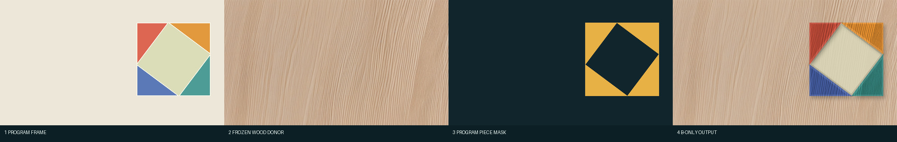
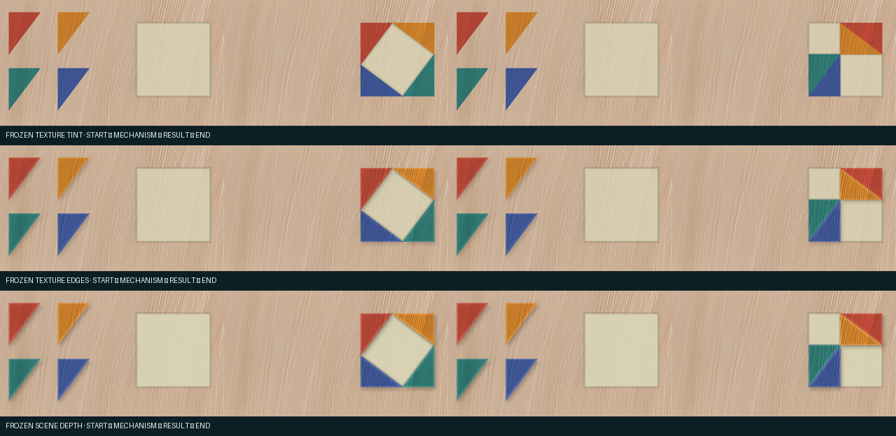
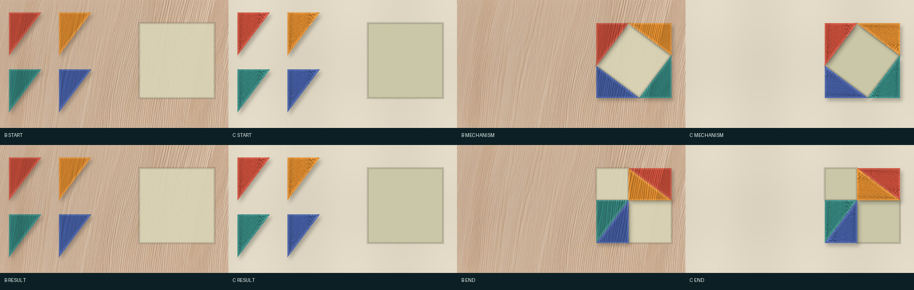
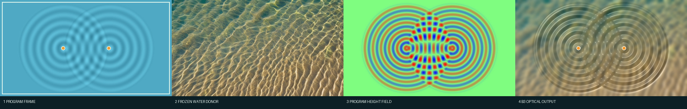
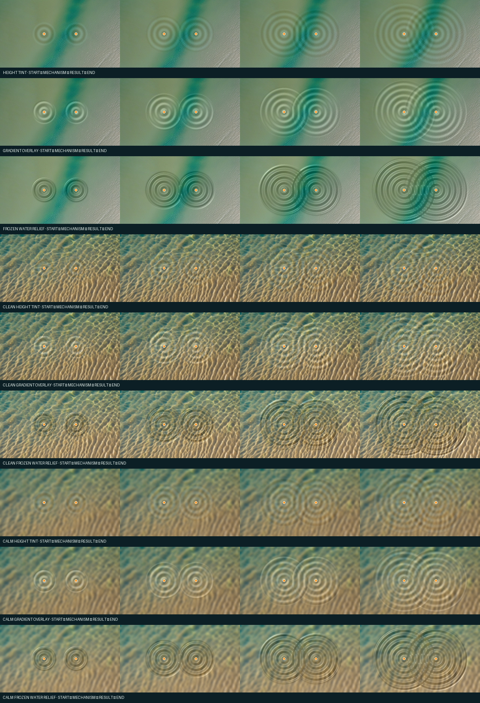
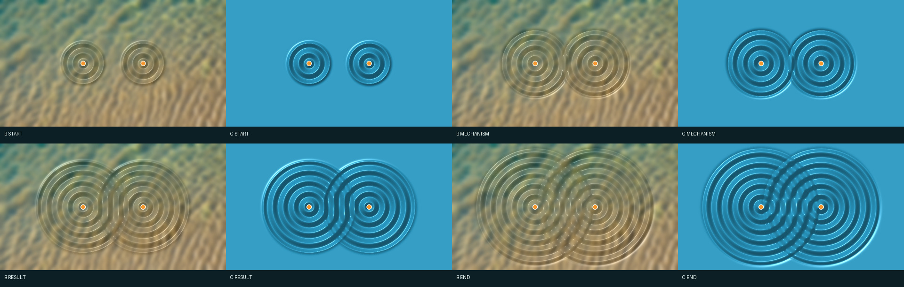

Live-Document / Stage 2 / Phase 8
C 不需要继续做一条
独立的上层路线
你的判断基本成立。数学和水波都可以用“冻结底图 + 程序状态”得到 足够好的关键帧。不过数学实验同时证明：若完全删掉 C 的对象局部坐标能力，木纹会在 物体移动时滑动。正确的收敛方式不是丢掉这项能力，而是把它降级成 B 的内部投影模式。 最终上层只保留 A 和统一后的 B。
A：需要新外观时，只生成一次真实底图或材质供体 B1：区域/标量投影——颜色、泥沙、浓度、细胞状态 B2：对象附着投影——纹理随几何对象移动（原 C 的一部分） B3：场驱动光学投影——高度/法线改变冻结底图的光照（原 C 的一部分）
对用户和概念规划器只暴露 A/B；B2、B3 是渲染器后端，不再叫独立路线 C。
这次怎样限制“只能使用 B”
两个案例都只允许读取冻结的 Phase 3 模型材质图。数学只能用程序多边形遮罩 在固定木材图上着色；水波只能在固定水体图上叠加程序高度或梯度。禁止重新生成场景， 也禁止按每个三角形自己的局部坐标重新采样木纹。第一轮水体供体有抢眼的青色斜带， 因此保留失败的 12 张，并换成更均匀的第二张冻结供体再跑三轮；第二轮焦散过密， 又保留其 12 张并增加一组压低焦散的平静底图。共生成数学 12 张、水波 36 张， 即 48 张结果，模型调用为 0。
数学：静态关键帧很好，但暴露了材质滑动

math02_piece_region，不是从程序截图重新做 Canny，也没有让模型猜
三角形位置。黄色表示本帧允许放置拼图材质的区域。数学 B-only 的精确合成方法
木材供体固定缩放到 640×360，并以 92% 原图 + 8% 暖色作为所有帧共同底图。 程序 JSON 仍提供四个三角形顶点和身份，但本次故意禁止对象局部采样：每个三角形直接 读取它当前屏幕位置下方的固定木纹亮度，再乘红、橙、绿、蓝四种材料色。三轮依次增加 9 px 内边缘、偏移 (5,7) px 的 5 px 模糊阴影，以及强度 0.24 的深度效果。 对象数量和总材质面积逐帧与程序数据核对。


问题要到跨帧材质身份才暴露。我们把每个三角形重新采样回相同的局部三角形坐标， 比较相邻帧亮度纹理。B 的平均相关系数是 0.009121， 旧 C 是 1.0。 B 使用屏幕固定木纹：三角形移动后，内部看到的是桌面另一块木纹；旧 C 的纹理跟着 对象走。因此“对象局部投影”不能删，但可以作为 B2 后端保留。
水波：B 可以完整替代旧 C

三轮供体与 B3 光学叠加怎样计算
第一组使用旧水体供体原图，只缩放；第二组换用更均匀的供体并做 2.2 px 模糊；
第三组保留同一供体，但用 8 px 模糊压低会抢占注意力的焦散。三组都没有重新调用模型。
选中 B3 对程序高度 h 求 x/y 梯度，组成
normalize(-13·dh/dx, -13·dh/dy, 1)，再用固定光向量计算漫反射和
38 次幂镜面项。结果作为亮度增量叠加在冻结供体上，而不是重新生成一张水面。
程序算出的叠加量与实际亮度变化四帧相关系数均为 1.0。


这里没有移动的独立固体对象，整个表面共享一套固定坐标。高度场只需改变底图光学 响应，因此 B3 足够。选中版本四帧中，由程序高度梯度算出的光学叠加量与实际亮度变化 相关系数均超过 0.95；不需要继续维护一个独立 C 路由。
为什么最初会把 B 和 C 分开
| 当时看到的差异 | 本轮后的理解 |
|---|---|
| B 修改真实图片；C 根据数据渲染 | 两者都可以表述为“程序状态投影到冻结外观” |
| C 有对象坐标和法线 | 这是投影坐标系/光学算子的区别，不需要成为顶层路线 |
| 数学物理似乎天然属于 C | 学科不是路由条件；对象是否移动、是否有数值场才是 |
收敛后的项目流程
程序动画与语义层
├─ 没有合适外观 → A 生成一次，冻结
└─ 已有冻结外观 → B
├─ B1 区域/标量状态
├─ B2 对象附着纹理
└─ B3 高度/法线光学
↓
正确关键帧
↓
视频模型做过渡
这使系统更简单，但没有牺牲旧 C 真正有用的能力。以三角洲为例：A 只生成一次真实 河口；B1 处理泥沙和湿沙；若有沙洲对象或水面高度，分别由 B2/B3 处理。概念规划器不再 需要理解 C。
复现、检查和未解决边界
.venv/bin/python -m modules.video_model.stage2.phase8_b_unification .venv/bin/python -m pytest modules/video_model/stage2/tests/test_phase8.py -q
本轮 48 张 B-only 输出已完整重建并逐文件比较 SHA-256；重跑结果记录在总清单的
determinism_replay。这只证明关键帧渲染确定，不等于视频模型也确定。
完整参数与公式位于 phase8_b_unification.py， 所有哈希、指标和结论位于 phase8-manifest.json。本轮比较的是关键帧， 尚未证明视频模型能保持 B2 的对象附着纹理；这仍需用实际过渡视频验证。